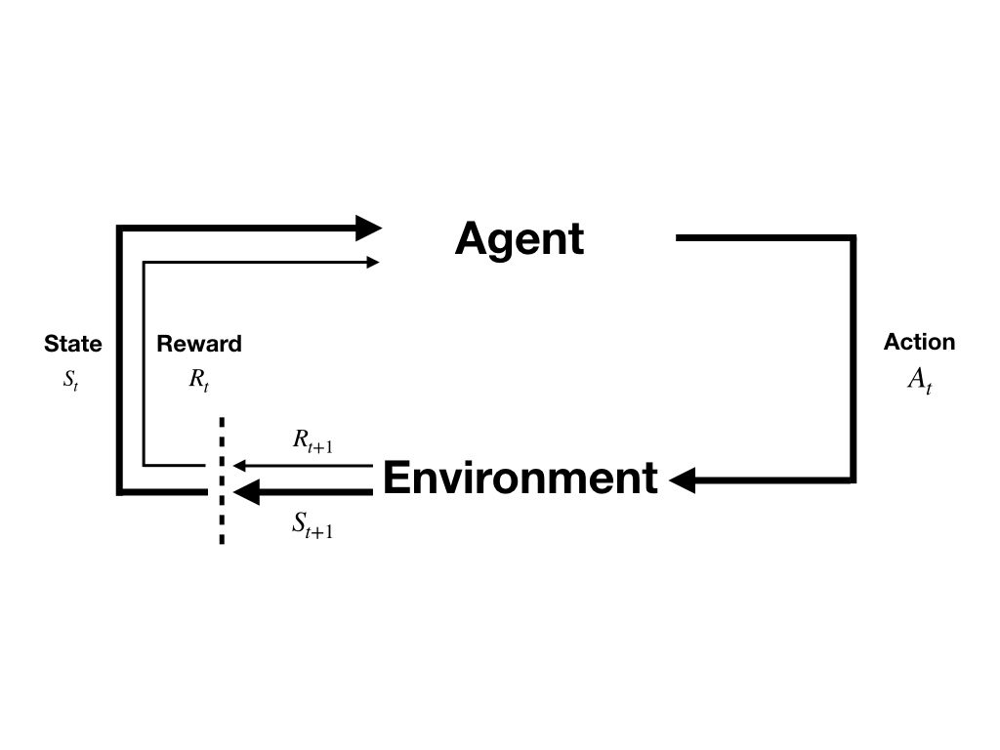

(draft)Policy Evaluation
Abstract: Dynamic programming have been introduced in the post 'An Introduction to Dynamic Programming'. And the following mission is to study some relative algorithms.
Policy Evaluation(Prediction)
Value function is widely employed in both DP methods and other reinforcement learning tasks. And if we have the optimal value function when the problems are MDP especially the finite MDP, we can find the optimal policy by just one-step search(that has been introduced in the post 'Optimal Policies and Optimal Value Functions'). So, our first strategy is to find the optimal policies through the optimal value functions.
Recall the interaction between agent and environment:

actions of agent are controled by the policy of agent, i.e. \(\pi(a|s)\), for a given state. And the value functions we are interested in are consist of the policy \(\pi(a|s)\) according Bellman equation(equation (6) in post 'Policies and Value Function'): \[ \begin{aligned} v_{\pi}(s)&\doteq \mathbb{E}_{\pi}[G_t|S_t=s]\\ &=\mathbb{E}_{\pi}[R_{t+1}+\gamma G_{t+1}|S_t=s]\\ &= \sum_a\pi(a|s)\sum_{s'}\sum_{r}p(s',r|s,a)[r+\gamma\mathbb{E}_{\pi}[G_{t+1}|S_{t+1}=s']]\\ &= \sum_a\pi(a|s)\sum_{s',r}p(s',r|s,a)[r+\gamma v_{\pi}(s')] \end{aligned}\tag{1} \]
So, here we just consider the situation that the policy is consistent, which means during computing value function the policy does not change. However, this policy could be arbitrary. Once the policy is invariant, our task convert to a prediction problem, that is to say, we could predict the sum of rewards we would get in the following steps before termination by current state.
The existence and uniquess of \(v_{\pi}\) are guaranteed if: 1. \(\gamma<1\) or 2. eventually termination is guaranteed.
And if dynamic is completely known, equation (1) converts to a equation of unknows \(v_{\pi}(s)\) and \(v_{\pi}(s')\). And \(|\mathcal{S}|\), \(|\mathcal{A}(s)|\),\(|\mathcal{R}|\) and \(|\mathcal{S}^{+}|\) are all finite(this has been declared in the post 'An Introduction to Dynamic Programming'). So equation (1) can be used to build a system of \(|\mathcal{S}|\) simultaneous linear equations in \(|\mathcal{S}|\) unknowns, i.e. \(v_{\pi}(s)\) for \(s\in{\mathcal{S}}\)
A system of \(|\mathcal{S}|\) linear equations of \(|\mathcal{S}|\) unknows is a troditional problem of linear algebra. And it can be solved in many ways like least square method, and there must be an optimal solution for its linearity. However, in DP methods, we prefer iterative solutions because of their efficiency and simplicity. The iterative process could produce a sequence of value functions: \[ \{v_0,v_1,\cdots ,v_k\} \]
And each of them is a function mapping \(\mathcal{S}^{+}\) to \(\mathbb{R}\). The inital value fuction \(v_0\) can be chosed arbitrary, but the value of terminal state should be assigned \(0\). Other value function \(v_i\) for \(i>0\) should also be assigned \(0\) if the state is termination.
The update rule to solve equation (1) is also equation(1) with different subscript:
\[ \begin{aligned} v_{k+1}&\doteq \mathbb{E}_{\pi}[R_{t+1}+\gamma v_k(S_{t+1})|S_t=s]\\ &=\sum_{a}\pi(a|s)\sum_{s',r}p(s',r|s,a)[r+\gamma v_k(s')] \end{aligned}\tag{2} \]
for all \(s\in \mathcal{S}\). The sequence \(\{v_0,v_1,\cdots\}\) would converge to \(v_{\pi}\) as \(k\to \infty\) under the conditions that guarantee the existence of \(v_{\pi}\). And this is called iterative policy evaluation. \(v_{k+1}(s)\) is the new value of \(s\) and \(v_k\) is the old value of \(S_{t+1}\). This kind of expected update depends on the following two elements: 1. state or state-action paire 2. precise way the estimated values of successor state are combined.
Because the state and state-action paire are arguments and the way of the combination of extimated values of successor state are the direction of update. All update done in the DP algorithms are called expected updates because they are based on expectation over all next stat, \(v_k(S_{t+1})\), rather than on a sample next state, \(v_k(s')\). And these update can be represented by equation like equation(2) and backup diagram(introduced in the post 'Policies and Value Function').
In Place Update
Let's go back to the update rule: \[ v_{k+1}=\mathbb{E}_{\pi}[R_{t+1}+\gamma v_k(S_{t+1})|S_t=s] \]
\(S_{t+1}\) contains all possible states and the value function of some of them had been updated. So we can replaced the old value function of a state by the new one. Further, We usually update the whole state space one by one in a certain sequence. So some of them have a new value function and others are not. Then we have two ways to deal with these update: 1. use an array store new value function and update the value function of the whole state space after a sweep 2. update at once the state has a new value
For example, the old value of states \(s_1\), \(s_2\) and \(s_3\) are \(v_t(s_1)=1\), \(v_t(s_2)=2\) and \(v_t(s_3)=3\): 1. we update value of \(s_1\) basing on \(v_t(S_{t+1})\) and it becomes \(v_{t+1}(s_1)=0\) for instance. 2. with in-place method, we update \(v_t(S_{t+1}=s_1)\) to \(0\) 3. then we use \(v_t(S_{t+1}=s_1)=0\) update \(v_t(s_2)\)
this is in-place method. In-place method converges to \(v_{\pi}\) faster than original one. A sweep is definition of a loop for each \(s\in\mathcal{S}\). And the order of the 'in-place' update of value of state has significant influnce on the rate of convergence. In-place update is always the first idea when we use iterative update methods.
Example of Policy Evaluation
Gridword:
1 | //todo |